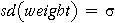
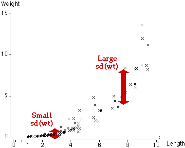

Assumption of Non-constant Variance
The inference about the parameters in the last page's Minitab output, and indeed the whole least squares analysis, are however flawed since they are based on more than the assumption of a linear relationship. The analysis also assumes that slug weights have the same standard deviation, whatever their length,

For the slug data, this is not true — the variability in weights of slugs with small length (or equivalently, small (length)) is much lower than the variability in weights of long slugs.

Bad Prediction Intervals
Since the Minitab analysis is based on an incorrect assumption, we cannot rely on the output. The dangers are most evident when Minitab is asked to predict the weights of slugs of different lengths. The resulting 95% prediction intervals are displayed in pink in the diagram below.
Drag the slider to display 95% prediction intervals for the weight of a new slug of different lengths. The prediction interval is unreasonably wide for small slugs. For example, a 2 cm slug is predicted to weigh between -1.45 grams and 1.98 grams. Not only is the lower bound of the prediction interval negative, but all recorded slugs that were close to 1.5 and 2.5 cm long weighed between 0.04 and 0.36 grams.
In a similar way, the prediction intervals are too narrow for long slugs — the prediction interval is unlikely to include 95% of slugs of length 9 cm.
If we are to rely on the output that Minitab gives, we require not only linearity but also constant response variance. We must search further for such a model.